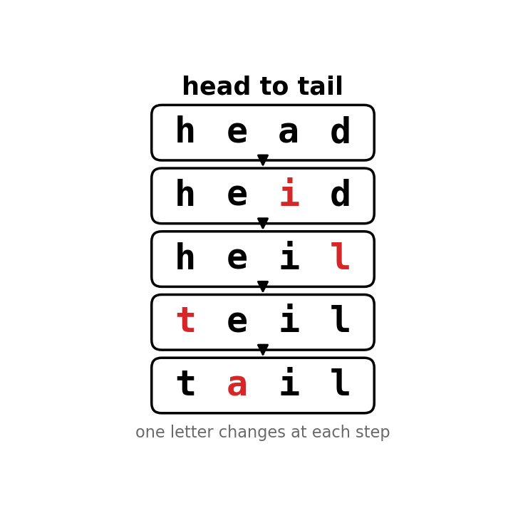
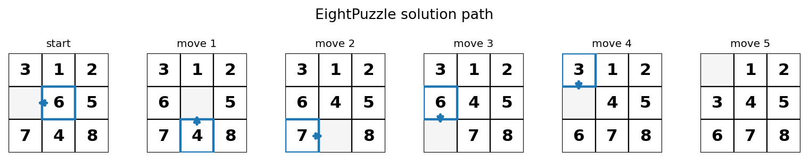
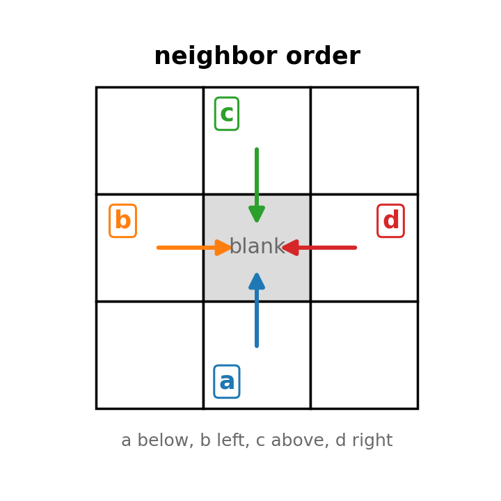
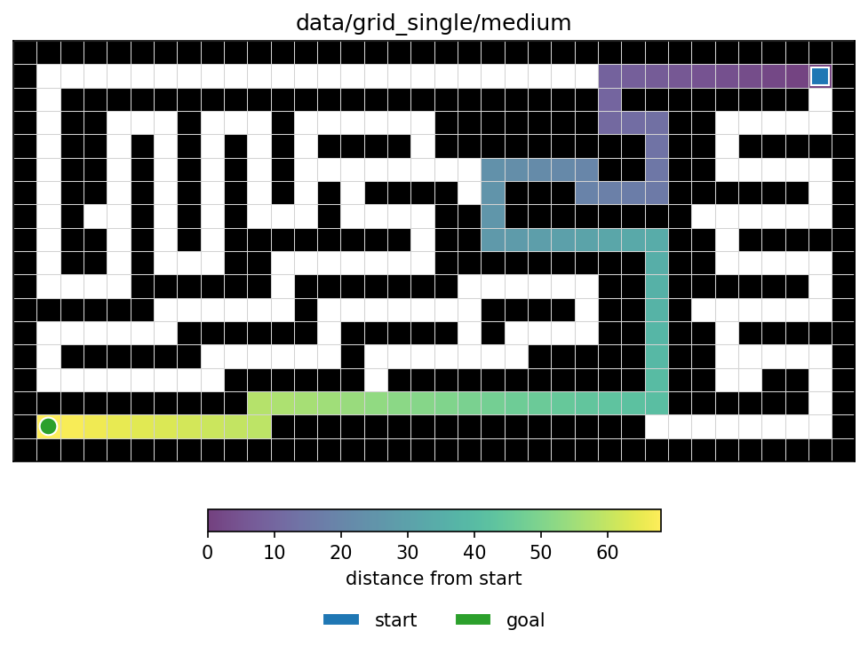
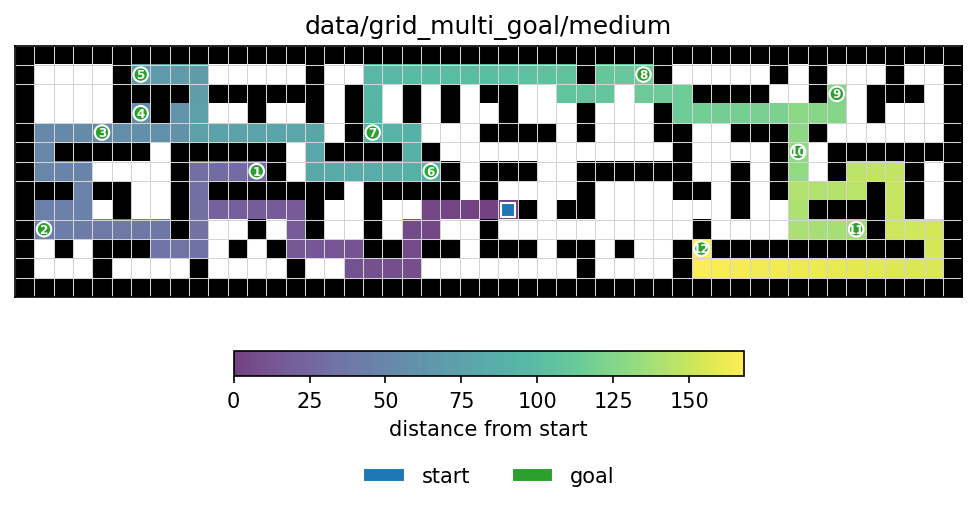

In this assignment you will be implementing the A* search algorithm for solving 4 different search problems - EightPuzzle, WordLadder, Grid, and MultiGoalGrid. Your single implementation of the algorithm will work for all problems, by properly instantiating an AbstractState class for each of them. You will see both the power of A* as an algorithm that applies to arbitrary discrete state spaces, and the power of heuristics to speed up search. You will be given a lot of code to work with for this assignment, a big part of your job is to read and understand this code.
To get started on this assignment look inside the template/ directory. The template contains the following files and directories:
search.py. You will edit and submit this - your
implementation of A* goes here
state.py. You will edit and submit this - your
implementation of each problem’s State goes here
utils.py. Some utilities we provide
main.py. You will run this file to test your code
(examples provided in each section below)
requirements.txt. You can install the required
packages with pip install -r requirements.txt
data/eight_puzzle. Text files containing example
problems for the eight puzzle task
data/word_ladder. Text file containing example
problems for the word ladder task, reference solutions for those
examples, and a dictionary of english words
data/grid_single. Text files containing example
mazes to solve for the single state single goal grid search
data/grid_multi_goal. Text files containing example
mazes to solve for the single state multi goal grid search
Please ONLY submit search.py and
state.py.
For each of the remaining parts of the assignment you will find TODOs
in search.py and state.py where you need to
write your own code. For example, for part III you will find TODOs
marked # TODO(III). We’ve provided many comments and
instructions in the code under those TODOs.
We highly recommend working in a virtual environment. You are free to
set up your local environment however you like but we recommend creating
a directory for all your CS440 work (e.g., mkdir cs440).
Within this directory (cd cs440) you can create a virtual
environment with the following command:
python3 -m venv cs440_venvNote that depending on your system you may need to use
python instead of python3 or py3.
Before running this command we also recommend checking that your python
version is the correct one (>=3.9) by running
python3 --version. The venv command above creates a local
copy of python in the cs440_venv directory which you can
“activate” in order to tell your terminal to use this local copy of
python instead of the system python.
Activate the virtual environment with:
source cs440_venv/bin/activate # On Linux/Mac
# or
cs440_venv\Scripts\activate # On WindowsOnce active you should see (cs440_venv) in your terminal
prompt. You can then install the required packages with:
cd template # change into the template directory where requirements.txt is located
pip install -r requirements.txt # install the packages in requirements.txtMake sure this environment is activated whenever you are working on
this assignment. You can deactivate the environment with the command
deactivate. You can also have your editor (e.g., VSCode)
use this virtual environment automatically so that every time you open a
terminal in this directory it will first activate the virtual
environment.
All commands below assume your terminal is inside the
template/ directory.

There are 2 “TODO(III)” in search.py.
Your first task is to implement a generic best first search algorithm
in the method best_first_search(starting_state) in
search.py. Your implementation should:
frontiervisitedIn pseudocode you should, - iteratively: - pop the first element from this frontier - check if the popped element is the goal of the search and if so - then the search should terminate and return the final path (through backtracking) - if no, add neighbors of the popped element to the frontier - do not add a neighbor if they have been visited before using a shorter path
Notice that the input to best_first_search is just a
starting state. You may be wondering:
Now you should look at state.py, there are 3 “TODO(III)”
in state.py. You should first read through our
AbstractState class, then look at an instantiation of this
class called WordLadderState.
The __lt__ method in AbstractState controls
how states are ordered in the priority queue. A* search ranks states
by:
g is self.dist_from_start, the path cost
from the start to the current stateh is self.h, the heuristic estimate from
the current state to the goalother return
True, if bigger return Falseself.tiebreak_idxYour __lt__(self, other) method should return
True exactly when self should be popped from
the priority queue before other.
In order to test your search code we’ve provided all of
WordLadderState. Once you’ve filled in the missing
__lt__ method in AbstractState, and
implemented the search code, you should be able to test your algorithm.
Make sure your algorithm works on all the provided tests before moving
on to the next parts. If it works you will not have to touch it
again!
Run best_first_search on all WordLadder problems:
python3 main.py --problem_type=WordLadder You can compare your paths against the reference solutions in
data/word_ladder/ladder_solutions.txt. Each non-comment
line lists whether vowel costs were used, whether the heuristic was
used, the start word, the goal word, the expected path cost, and one
reference path.
You can also run the word ladder problems where the cost of changing a vowel is larger (10) than the cost of changing a consonant (1).
python3 main.py --problem_type=WordLadder --add_cost_to_vowelsThis gives some different results, in particular take a look at the task of going from “small” to “thing”.
If you wish to test your code with and without heuristics (i.e., run dijkstra vs A*) you can pass in the argument “use_heuristic” (note the default value is False, so not passing in this argument means not using heuristics), e.g.,
python3 main.py --problem_type=WordLadder --use_heuristicWe recommend submitting your code at this point to Gradescope to make sure it passes the autograder tests before moving on to the next parts.

Now move on to EightPuzzleState, we’ve provided some but not all of
the code you’ll need here. There are 3 “TODO(IV)” in
state.py.
manhattan(a,b)
EightPuzzleState.get_neighbors(self)
EightPuzzleState.compute_heuristic(self)
Run best_first_search on EightPuzzle problems (all puzzles in
data/eight_puzzle/N_moves.txt can be solved in exactly
\(N\) moves):
python3 main.py --problem_type=EightPuzzle --puzzle_len=5 --use_heuristicYou can replace 5 with 10 or
27. The path printed by main.py includes the
starting state, so a correct solution for a file named
N_moves.txt has path length \(N+1\).
Once your EightPuzzle search is working, you can add
--draw_solution to draw the solution path with
matplotlib.


Run the following to draw a maze before running search:
python3 main.py --problem_type=GridSingle --draw_maze_only --maze_file=data/grid_single/tinyYou can replace data/grid_single/tiny with any maze file
in data/grid_single. To save the maze image instead of
opening a window, add something like
--save_maze=grid_single.png.
Now you will need to implement the SingleGoalGridState
class. If you would like to see how the maze is built navigate to
maze.py, but otherwise we’ve provided you everything you
need in state.py where you have 2 “TODO(V)” in
state.py.
Each grid state stores the maze as self.maze. To
implement get_neighbors, call
self.maze.neighboring_cells(*self.state) to get adjacent
in-bounds cells, then use self.maze.is_free(...) to keep
only cells that are not walls. For each free neighboring cell, create a
new SingleGoalGridState with the same goal, maze, and
heuristic setting. You may assume all actions cost 1, meaning the
dist_from_start for every neighbor should be 1 more than
its parent.
You also need to implement is_goal,
compute_heuristic, __hash__, and
__eq__. The heuristic we use for single-goal grid search is
the manhattan distance from the current location to the goal. For hash
and equality checks, two SingleGoalGridState objects
represent the same search state when their current locations are the
same.
You can test your code with:
python3 main.py --problem_type=GridSingle --use_heuristic --maze_file=data/grid_single/mediumIf you would like to also visualize the resulting solution with
matplotlib add the --show_maze_vis flag. To save the
visualization instead of opening a window, add something like
--save_maze=grid_single.png.
Make sure to pass in the use_heuristic flag if you wish to test your heuristic

We now generalize single goal grid search to finding the shortest
path in multi goal grid search. There are 2 “TODO(VI)” for you to
complete in state.py. As in single-goal grid search, all
actions cost 1.
Multiple goals requires a new heuristic. The one we use is based on the Minimum Spanning Tree (MST). Specifically, given a state and a set of goals, the heuristic cost for visiting all the goals is computed as follows:
We provide you with most of the code you need to compute this MST
heuristic, you can call
compute_mst_cost(self.goal, manhattan) to compute the cost
of the minimum spanning tree for a set of goals. Note that
because computing the mst takes some time, you should store the computed
mst values in the cache we provide you.
To implement MultiGoalGridState.get_neighbors, again use
self.maze.neighboring_cells(...) and
self.maze.is_free(...) to find the free neighboring cells.
The important new detail is that self.goal now represents
the goals that have not yet been reached. When a neighbor
location is one of the remaining goals, remove that location from the
neighbor’s goal tuple. When the neighbor is not a remaining goal, keep
the same goal tuple. Each neighbor should use the same maze, MST cache,
and heuristic setting as its parent.
You also need to implement the other AbstractState
methods of MultiGoalGridState. Be careful, they are not
necessarily the same as for single goal search! self.state
alone is not sufficient for determining whether two states are the same:
if the agent has two goals left to visit and is in position
(row, col), that is a different state from being
at the same (row, col) position with only one goal left to
visit. Goal visitation history matters and you should account for this
in your __eq__ and __hash__ methods.
You can test your code with:
python3 main.py --problem_type=GridMultiGoal --use_heuristic --maze_file=data/grid_multi_goal/tinyYou can replace data/grid_multi_goal/tiny with any maze
file in data/grid_multi_goal. Once again, if you would like
to also visualize the resulting solution with matplotlib add the
--show_maze_vis flag, or save it with something like
--save_maze=grid_multi_goal.png.
Submit the main part of this assignment by uploading
search.py and state.py to Gradescope. Do not
forget to access Gradescope from the Launch App button in Coursera so
that your grade is automatically sync’d.
Before submitting, make sure to comment out any print statements you added for debugging, since extra output can slow down your code on the autograder.
You are expected to be familiar with the general policies on the course syllabus (e.g. academic integrity). In particular, notice that this is an individual assignment and that you may not use external sources to write significant parts of your code for you.